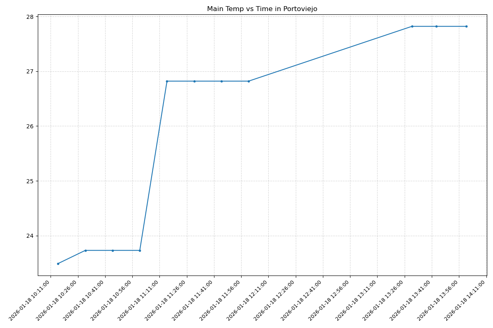
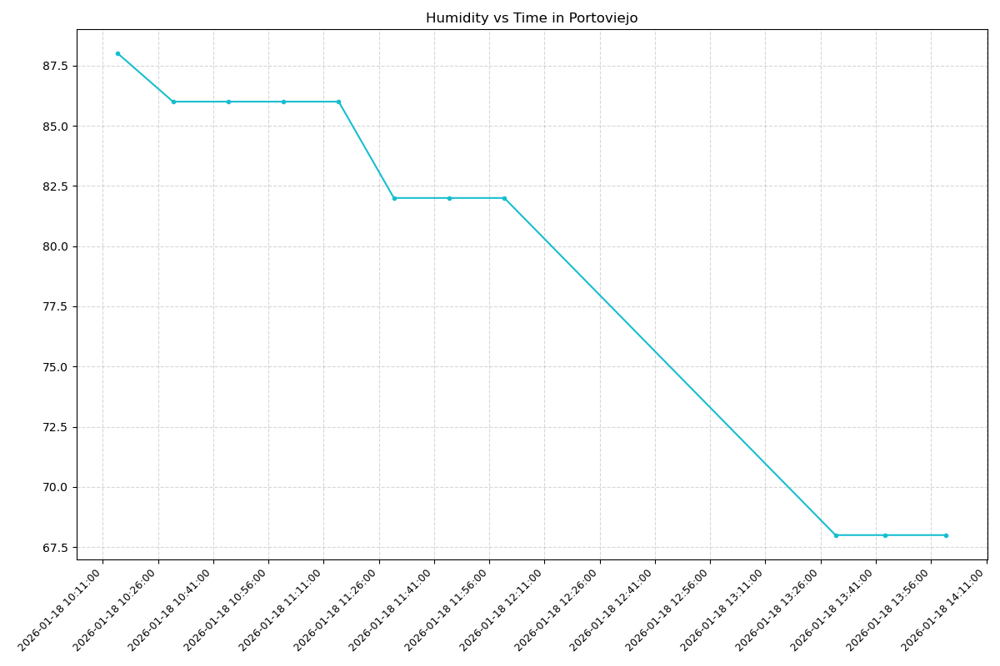
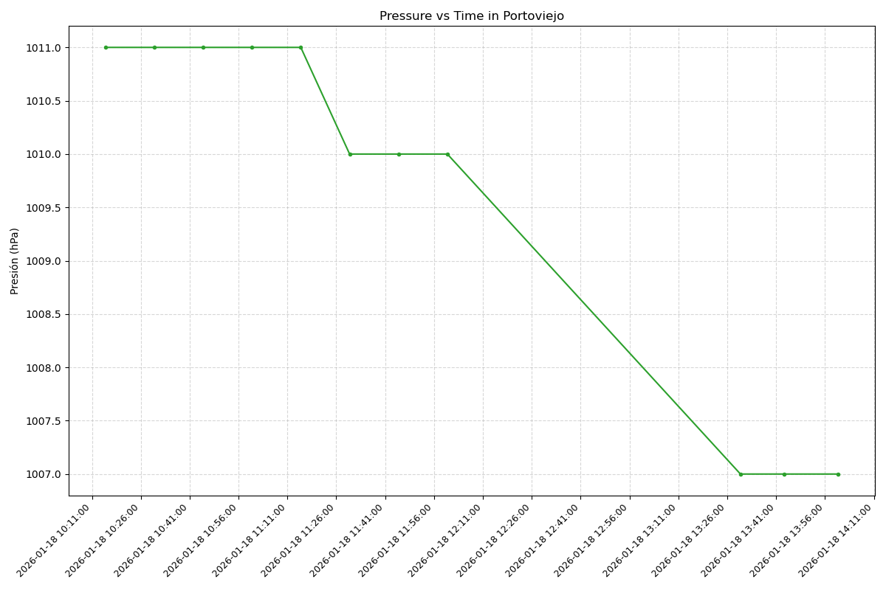

Proyecto ICCD332 Arquitectura de Computadores
Índice
1. City Weather APP
Este es el proyecto de fin de semestre en donde se pretende demostrar las destrezas obtenidas durante el transcurso de la asignatura de Arquitectura de Computadores.
- Conocimientos de sistema operativo Linux
- Conocimientos de Emacs/Jupyter
- Configuración de Entorno para Data Science con Mamba/Anaconda
- Literate Programming
1.1. Estructura del proyecto
Se recomienda que el proyecto se cree en el home del sistema operativo i.e. home/<user>. Allí se creará la carpeta PortoviejoWeather
# 1. Definimos el directorio principal en home. DIR_PROYECTO=~/PortoviejoWeather # 2.Crear la estructura de directorios. mkdir -p $DIR_PROYECTO/weather-site/content/images mkdir -p $DIR_PROYECTO/weather-site/public/images # 3. Entrar al directorio cd $DIR_PROYECTO # 4. Crear los archivos vacíos necesarios en la raíz touch CityTemperatureAnalysis.ipynb touch clima-portoviejo-hoy.csv touch get-weather.sh touch main.py touch output.log # 5. Crear los scripts de configuración del sitio touch weather-site/build-site.el touch weather-site/build.sh # 6. Crear los archivos de contenido y web touch weather-site/content/index.org touch weather-site/content/index.org_archive touch weather-site/public/index.html # 7. Crear placeholders para imágenes. touch weather-site/content/images/plot.png touch weather-site/content/images/temperature.png touch weather-site/public/images/plot.png touch weather-site/public/images/temperature.png # 8. Verfica la posición actual. echo "Estructura creada en:" pwd
Estructura creada en: /home/alejandro/PortoviejoWeather
El proyecto ha de tener los siguientes archivos y subdirectorios. Adaptar los nombres de los archivos según las ciudades específicas del grupo.
.
├── CityTemperatureAnalysis.ipynb
├── clima-portoviejo-hoy.csv
├── get-weather.sh
├── images
│ ├── humidity.png
│ ├── pressure.png
│ └── temperature_style.png
├── main.py
├── output.log
├── public
│ └── images
│ ├── humidity.png
│ ├── pressure.png
│ └── temperature_style.png
└── weather-site
├── build-site.el
├── build.sh
├── content
│ ├── images
│ │ ├── humidity.png
│ │ ├── pressure.png
│ │ └── temperature_style.png
│ ├── index.org
│ └── index.org_archive
└── public
├── images
│ ├── humidity.png
│ ├── pressure.png
│ └── temperature_style.png
└── index.html
9 directories, 22 files
1.2. Formulación del Problema
Se desea realizar un registro climatológico de una ciudad \(\mathcal{C}\). Para esto, escriba un script de Python/Java que permita obtener datos climatológicos desde el API de openweathermap. El API hace uso de los valores de latitud \(x\) y longitud \(y\) de la ciudad \(\mathcal{C}\) para devolver los valores actuales a un tiempo \(t\).
Los resultados obtenidos de la consulta al API se escriben en un archivo clima-<ciudad>-hoy.csv. Cada ejecución del script debe almacenar nuevos datos en el archivo. Utilice crontab y sus conocimientos de Linux y Programación para obtener datos del API de openweathermap con una periodicidad de 15 minutos mediante la ejecución de un archivo ejecutable denominado get-weather.sh. Obtenga al menos 50 datos. Verifique los resultados. Todas las operaciones se realizan en Linux o en el WSL. Las etapas del problema se subdividen en:
- Conformar los grupos de 2 estudiantes y definir la ciudad objeto de estudio.
- Crear su API gratuito en openweathermap
- Escribir un script en Python/Java que realice la consulta al API y escriba los resultados en clima-<ciudad>-hoy.csv. El archivo ha de contener toda la información que se obtiene del API en columnas. Se debe observar que los datos sobre lluvia (rain) y nieve (snow) se dan a veces si existe el fenómeno.
- Desarrollar un ejecutable get-weather.sh para ejecutar el programa Python/Java.1
import requests import pandas as pd from datetime import datetime import os # 1. Configuración inicial. API_KEY = "bd5cf379b6d6b7d080073db8791dd9eb" LAT = "-1.0546" LON = "-80.4544" URL = f"https://api.openweathermap.org/data/2.5/weather?lat={LAT}&lon={LON}&appid={API_KEY}&units=metric" CSV_PATH = '/home/alejandro/PortoviejoWeather/clima-portoviejo-hoy.csv' # 2. Configuración para el CSV. EXPECTED_COLUMNS = [ 'dt', 'coord_lon', 'coord_lat', 'weather_0_id', 'weather_0_main', 'weather_0_description', 'weather_0_icon', 'base', 'main_temp', 'main_feels_like', 'main_temp_min', 'main_temp_max', 'main_pressure', 'main_humidity', 'main_sea_level', 'main_grnd_level', 'visibility', 'wind_speed', 'wind_deg', 'wind_gust', 'clouds_all', 'sys_type', 'sys_id', 'sys_country', 'sys_sunrise', 'sys_sunset', 'timezone', 'id', 'name', 'cod' ] # 3. Funciones necesarias. def get_weather(): try: response = requests.get(URL) if response.status_code == 200: data = response.json() # 1. Sacar 'weather' de la lista if 'weather' in data and len(data['weather']) > 0: w = data.pop('weather')[0] for k, v in w.items(): data[f"weather_0_{k}"] = v # 2. Aplanar JSON df = pd.json_normalize(data, sep='_') # 3. Convertir fechas for col in ['dt', 'sys_sunrise', 'sys_sunset']: if col in df.columns: df[col] = pd.to_datetime(df[col], unit='s') - pd.Timedelta(hours=5) # 4. Forzar columnas exactas df = df.reindex(columns=EXPECTED_COLUMNS) # 5. Guardar en CSV if not os.path.isfile(CSV_PATH): df.to_csv(CSV_PATH, index=False, header=True) else: df.to_csv(CSV_PATH, mode='a', index=False, header=False) # Impresión de registros. fecha_actual = df['dt'].iloc[0] print(f"Éxito: Dato registrado para Portoviejo a las {fecha_actual}") else: print(f"Error API: {response.status_code}") except Exception as e: print(f"Error: {e}") if __name__ == "__main__": get_weather()
- Configurar Crontab para la adquisición de datos. Escriba el comando configurado. Respalde la ejecución de crontab en un archivo output.log ** Configuración de Crontab
# Comando de crontab para ejecución cada 15 minutos # */15 * * * * /home/alejandro/miniforge3/envs/iccd332/bin/python /home/alejandro/PortoviejoWeather/main.py >> /home/alejandro/PortoviejoWeather/output.log 2>&1 echo "Crontab configurado correctamente para ejecución cada 15 minutos."
Crontab configurado correctamente para ejecución cada 15 minutos.
- Realizar la presentación del Trabajo utilizando la generación
del sitio web por medio de Emacs. Para esto es necesario crear
la carpeta weather-site dentro del proyecto. Puede ajustar el
look and feel según sus preferencias. El servidor a usar es
el simple-httpd integrado en Emacs que debe ser instalado:
- Usando comandos Emacs:
M-x package-installpresionamos enter (i.e. RET) y escribimos el nombre del paquete: simple-httpd - Configurando el archivo init.el
- Usando comandos Emacs:
(use-package simple-httpd :ensure t)
- Detalles de cambios del archivo Build.el
Se detallan los estilos específicos inyectados para lograr la estética visual del sitio.
- Colores Base y Márgenes
Se define el fondo negro absoluto para el modo "Ultra-Dark" y se establece el margen izquierdo vital para que el contenido no quede oculto bajo la barra lateral.
/* Fondo negro y texto blanco */ body { background-color: #000000; color: #ffffff; } /* Desplazamiento para respetar la Sidebar fija */ #content { margin-left: 320px; max-width: 900px; }
- Efecto "Glow" en Código
Este es el estilo que hace que los bloques de código brillen al pasar
el mouse. Se utiliza una
sombra de caja difusa (box-shadow) blanca.
/* Glow blanco al pasar el cursor sobre el código */ pre.src:hover { border-color: #ffffff; box-shadow: 0 0 80px 20px rgba(255, 255, 255, 0.25); transform: translateY(-5px); }
- Efecto "Neon" en Imágenes
Para las gráficas, se aplica un resplandor rojo intenso en el
estado hover para resaltarlas sobre el fondo oscuro.
/* Glow rojo intenso para las imágenes */ img:hover { border-color: #ff0000; box-shadow: 0 0 100px 30px rgba(255, 0, 0, 0.45); transform: scale(1.03); }
- Su código debe estar respaldado en GitHub/BitBucket, la dirección será remitida en la contestación de la tarea.
# 1. Navegar al directorio del proyecto cd /home/alejandro/PortoviejoWeather # 2. Configurar Identidad en Git. git config --global user.name "Alejandro Navarrete" git config --global user.email "dennis.navarrete@epn.edu.ec" # 3. Inicializar repositorio (si no existe) if [ ! -d ".git" ]; then git init echo "Repositorio inicializado." fi # 4. Configurar la rama principal git branch -M main # 5. Añadir archivos y realizar commit git add . # El '|| true' para evitar detenciones si ya se realizó el proceso anteriormente. git commit -m "Entrega Final: Proyecto PortoviejoWeather" || echo "Nada nuevo que guardar" # 6. Configurar GitHub git remote remove origin || true git remote add origin https://github.com/dannstrak/PortoviejoWeather.git # 7. Subir a GitHub git push -u origin main
[main ba1d222] Entrega Final: Proyecto PortoviejoWeather 2 files changed, 2 insertions(+)
1.3. Descripción del código
A continuación se detalla el funcionamiento del script principal
main.py.
Estrategia de Solución
La estrategia adoptada para resolver el problema de monitoreo
climático en Portoviejo se basa en la implementación de una
arquitectura de Pipeline de Datos Automatizado.
Esta solución se divide en tres capas lógicas.
A continuación se detallan los pilares de esta estrategia:
- Arquitectura ETL (Extract, Transform, Load)
Para garantizar un flujo de datos constante sin intervención manual, se diseñó un proceso ETL ligero utilizando Python:
- Extracción (Extract): Se consume la API de OpenWeatherMap cada 15 minutos. Se eligió esta frecuencia para obtener una granularidad suficiente que permita observar micro-variaciones en la temperatura y humedad sin exceder la cuota gratuita de la API.
- Transformación (Transform): Los datos crudos en formato JSON (anidados) se normalizan a una estructura tabular plana. Se realiza una conversión de zona horaria (UTC a UTC-5) para que los datos sean relevantes.
- Carga (Load): Se utiliza un mecanismo de almacenamiento
incremental (
append mode) en un archivo CSV. Esto evita la necesidad de una base de datos compleja (como SQL) para este volumen de datos, manteniendo el proyecto portable y ligero. - Automatización mediante Cron Jobs
La fiabilidad del sistema depende de su ejecución autónoma. Se
implementó una tarea programada en el sistema operativo Linux
(usando crontab) que ejecuta el script main.py estrictamente cada
15 minutos.
Esto asegura que la serie temporal no tenga "huecos" significativos y
que el
dataset crezca orgánicamente las 24 horas del día.
- Generación de Reportes Estáticos (Dataflow Visual)
Para la capa de presentación, se descartó el uso de dashboards dinámicos pesados (como PowerBI o Grafana) en favor de un enfoque de Sitio Web Estático generado con Emacs Org-mode. La estrategia consiste en:
- Utilizar Matplotlib para generar gráficas estáticas actualizadas basadas en el histórico del CSV.
- Incrustar estas imágenes automáticamente en un documento principal (.org).
- Compilar el documento a HTML/CSS para su publicación web.
- Importación de Librerías
Se inicia importando los módulos necesarios: requests para la
comunicación HTTP con la API, pandas para la
estructuración de datos, y librerías del sistema para manejo de fechas y archivos.
import requests import pandas as pd from datetime import datetime import os
- Configuración Inicial y Constantes
Se definen las constantes globales que controlan la ejecución: la credencial de acceso (API Key), las coordenadas geográficas de Portoviejo y la ruta donde se almacenará el historial climático.
# 1. Configuración inicial. API_KEY = "bd5cf379b6d6b7d080073db8791dd9eb" LAT = "-1.0546" LON = "-80.4544" URL = f"https://api.openweathermap.org/data/2.5/weather?lat={LAT}&lon={LON}&appid={API_KEY}&units=metric" CSV_PATH = '/home/alejandro/PortoviejoWeather/clima-portoviejo-hoy.csv'
- Definición del Esquema del CSV
Para garantizar la consistencia de los datos a largo plazo, se define
una lista estricta de columnas (EXPECTED_COLUMNS).
Esto actúa como un molde para asegurar que el CSV siempre tenga la misma estructura.
# 2. Configuración para el CSV. EXPECTED_COLUMNS = [ 'dt', 'coord_lon', 'coord_lat', 'weather_0_id', 'weather_0_main', 'weather_0_description', 'weather_0_icon', 'base', 'main_temp', 'main_feels_like', 'main_temp_min', 'main_temp_max', 'main_pressure', 'main_humidity', 'main_sea_level', 'main_grnd_level', 'visibility', 'wind_speed', 'wind_deg', 'wind_gust', 'clouds_all', 'sys_type', 'sys_id', 'sys_country', 'sys_sunrise', 'sys_sunset', 'timezone', 'id', 'name', 'cod' ]
- Petición al Servidor
La función principal comienza realizando una petición GET a la URL
configurada. Se valida que el código de estado sea 200 (OK) antes de proceder.
# 3. Funciones necesarias. def get_weather(): try: response = requests.get(URL) if response.status_code == 200: data = response.json()
- Procesamiento de Datos Anidados
La API devuelve la información del clima dentro de una lista bajo la
clave 'weather'. Este segmento extrae el primer elemento de esa
lista y lo aplana dentro del diccionario principal para evitar problemas al convertirlo a tabla.
# 1. Sacar 'weather' de la lista if 'weather' in data and len(data['weather']) > 0: w = data.pop('weather')[0] for k, v in w.items(): data[f"weather_0_{k}"] = v
- Normalización a DataFrame
Utilizamos la función json_normalize de Pandas para convertir el
objeto JSON (diccionario) en una
fila de datos tabular plana, usando el guion bajo como separador.
# 2. Aplanar JSON df = pd.json_normalize(data, sep='_')
- Conversión de Zona Horaria
Los tiempos recibidos están en formato UNIX (segundos). En este bloque
se convierten a formato datetime legible y se restan 5 horas (Timedelta(hours=5)) para ajustar los datos a la hora local de Ecuador.
# 3. Convertir fechas for col in ['dt', 'sys_sunrise', 'sys_sunset']: if col in df.columns: df[col] = pd.to_datetime(df[col], unit='s') - pd.Timedelta(hours=5)
- Validación de Columnas
Se fuerza al DataFrame a cumplir con el esquema definido en el paso 3
mediante reindex. Esto previene errores si la API llegara a omitir algún campo opcional (como wind_gust).
# 4. Forzar columnas exactas df = df.reindex(columns=EXPECTED_COLUMNS)
- Persistencia en Disco (Append)
Esta lógica maneja el almacenamiento. Si el archivo no existe, lo crea
con encabezados. Si ya existe, simplemente anexa la nueva fila al final (mode'a'=) sin duplicar la cabecera.
# 5. Guardar en CSV if not os.path.isfile(CSV_PATH): df.to_csv(CSV_PATH, index=False, header=True) else: df.to_csv(CSV_PATH, mode='a', index=False, header=False) # Impresión de registros. fecha_actual = df['dt'].iloc[0] print(f"Éxito: Dato registrado para Portoviejo a las {fecha_actual}")
- Manejo de Errores y Ejecución
Finalmente, se cierran los bloques condicionales manejando errores de conexión o excepciones generales, y se define el punto de entrada del script.
else: print(f"Error API: {response.status_code}") except Exception as e: print(f"Error: {e}") if __name__ == "__main__": get_weather()
1.4. Script ejecutable sh
Se coloca el contenido del script ejecutable. Recuerde que se debe utilizar el entorno de anaconda/mamba denominado iccd332 para la ejecución de Python; independientemente de que tenga una instalación nativa de Python
En el caso de los shell script se puede usar `which sh` para conocer la ubicación del ejecutable
which sh
/usr/bin/sh
De igual manera se requiere localizar el entorno de mamba iccd332 que será utilizado
which mamba
/home/alejandro/miniforge3/condabin/mamba
Con esto el archivo ejecutable a de tener (adapte el código según las condiciones de su máquina):
#!/bin/bash source /home/alejandro/miniforge3/etc/profile.d/conda.sh eval "$(conda shell.bash hook)" conda activate iccd332 cd /home/alejandro/PortoviejoWeather python main.py
Finalmente convierta en ejecutable como se explicó en clases y laboratorio.
chmod +x /home/alejandro/PortoviejoWeather/get-weather.sh
1.5. Configuración de Crontab
Se indica la configuración realizada en crontab para la adquisición de datos
*/15 * * * * /home/alejandro/miniforge3/envs/iccd332/bin/python /home/alejandro/PortoviejoWeather/main.py >> /home/alejandro/PortoviejoWeather/output.log 2>&1
- Recuerde remplazar <City> por el nombre de la ciudad que analice
- Recuerde ajustar el tiempo para potenciar tomar datos nuevos
- Recuerde que
2>&1permite guardar enoutput.logtanto la salida del programa como los errores en la ejecución.
2. Presentación de resultados
Para la pressentación de resultados se utilizan las librerías de Python:
- matplotlib
- pandas
Alternativamente como pudo estudiar en el Jupyter Notebook
CityTemperatureAnalysis.ipynb, existen librerías alternativas que se
pueden utilizar para presentar los resultados gráficos. En ambos
casos, para que funcione los siguientes bloques de código, es
necesario que realice la instalación de los paquetes usando mamba
install <nombre-paquete>
2.1. Muestra Aleatoria de datos
import os import pandas as pd df = pd.read_csv('/home/alejandro/PortoviejoWeather/clima-portoviejo-hoy.csv') print(f"Dataset cargado. Filas: {df.shape[0]}, Columnas: {df.shape[1]}")
Dataset cargado. Filas: 27, Columnas: 30
import pandas as pd df = pd.read_csv('/home/alejandro/PortoviejoWeather/clima-portoviejo-hoy.csv') # Tomamos la muestra n = min(10, len(df)) sample = df.sample(n) # Para que salga la línea divisoria |---| en Org-mode, debemos insertar 'None' # entre los encabezados y los datos. headers = list(sample.columns) data = sample.values.tolist() table = [headers] + [None] + data table
| dt | coordlon | coordlat | weather0id | weather0main | weather0description | weather0icon | base | maintemp | mainfeelslike | maintempmin | maintempmax | mainpressure | mainhumidity | mainsealevel | maingrndlevel | visibility | windspeed | winddeg | windgust | cloudsall | systype | sysid | syscountry | syssunrise | syssunset | timezone | id | name | cod |
|---|---|---|---|---|---|---|---|---|---|---|---|---|---|---|---|---|---|---|---|---|---|---|---|---|---|---|---|---|---|
| 2026-01-18 11:15:06 | -80.4544 | -1.0546 | 804 | Clouds | overcast clouds | 04d | stations | 26.82 | 29.86 | 26.82 | 26.82 | 1011 | 86 | 1011 | 1006 | 10000 | 0.59 | 222 | 1.0 | 100 | 1.0 | 8552.0 | EC | 2026-01-18 06:26:55 | 2026-01-18 18:37:10 | -18000 | 3652941 | Portoviejo | 200 |
| 2026-01-18 12:00:05 | -80.4544 | -1.0546 | 804 | Clouds | overcast clouds | 04d | stations | 26.82 | 29.51 | 26.82 | 26.82 | 1010 | 82 | 1010 | 1005 | 10000 | 1.01 | 250 | 1.26 | 100 | 1.0 | 8552.0 | EC | 2026-01-18 06:26:55 | 2026-01-18 18:37:10 | -18000 | 3652941 | Portoviejo | 200 |
| 2026-01-18 11:30:05 | -80.4544 | -1.0546 | 804 | Clouds | overcast clouds | 04d | stations | 26.82 | 29.51 | 26.82 | 26.82 | 1010 | 82 | 1010 | 1005 | 10000 | 1.01 | 250 | 1.26 | 100 | 1.0 | 8552.0 | EC | 2026-01-18 06:26:55 | 2026-01-18 18:37:10 | -18000 | 3652941 | Portoviejo | 200 |
| 2026-01-18 10:30:05 | -80.4544 | -1.0546 | 804 | Clouds | overcast clouds | 04d | stations | 23.73 | 24.4 | 23.73 | 23.73 | 1011 | 86 | 1011 | 1006 | 10000 | 0.59 | 222 | 1.0 | 100 | nan | nan | EC | 2026-01-18 06:26:55 | 2026-01-18 18:37:10 | -18000 | 3652941 | Portoviejo | 200 |
| 2026-01-18 10:15:06 | -80.4544 | -1.0546 | 500 | Rain | light rain | 10d | stations | 23.49 | 24.19 | 23.49 | 23.49 | 1011 | 88 | 1011 | 1006 | 10000 | 0.89 | 227 | 1.35 | 100 | nan | nan | EC | 2026-01-18 06:26:55 | 2026-01-18 18:37:10 | -18000 | 3652941 | Portoviejo | 200 |
| 2026-01-18 11:00:06 | -80.4544 | -1.0546 | 804 | Clouds | overcast clouds | 04d | stations | 23.73 | 24.4 | 23.73 | 23.73 | 1011 | 86 | 1011 | 1006 | 10000 | 0.59 | 222 | 1.0 | 100 | nan | nan | EC | 2026-01-18 06:26:55 | 2026-01-18 18:37:10 | -18000 | 3652941 | Portoviejo | 200 |
| 2026-01-18 11:45:05 | -80.4544 | -1.0546 | 804 | Clouds | overcast clouds | 04d | stations | 26.82 | 29.51 | 26.82 | 26.82 | 1010 | 82 | 1010 | 1005 | 10000 | 1.01 | 250 | 1.26 | 100 | 1.0 | 8552.0 | EC | 2026-01-18 06:26:55 | 2026-01-18 18:37:10 | -18000 | 3652941 | Portoviejo | 200 |
| 2026-01-18 13:30:03 | -80.4544 | -1.0546 | 804 | Clouds | overcast clouds | 04d | stations | 27.82 | 30.08 | 27.82 | 27.82 | 1007 | 68 | 1007 | 1003 | 10000 | 2.07 | 300 | 2.2 | 96 | 1.0 | 8552.0 | EC | 2026-01-18 06:26:55 | 2026-01-18 18:37:10 | -18000 | 3652941 | Portoviejo | 200 |
| 2026-01-18 13:43:29 | -80.4544 | -1.0546 | 804 | Clouds | overcast clouds | 04d | stations | 27.82 | 30.08 | 27.82 | 27.82 | 1007 | 68 | 1007 | 1003 | 10000 | 2.07 | 300 | 2.2 | 96 | 1.0 | 8552.0 | EC | 2026-01-18 06:26:55 | 2026-01-18 18:37:10 | -18000 | 3652941 | Portoviejo | 200 |
| 2026-01-18 10:45:05 | -80.4544 | -1.0546 | 804 | Clouds | overcast clouds | 04d | stations | 23.73 | 24.4 | 23.73 | 23.73 | 1011 | 86 | 1011 | 1006 | 10000 | 0.59 | 222 | 1.0 | 100 | nan | nan | EC | 2026-01-18 06:26:55 | 2026-01-18 18:37:10 | -18000 | 3652941 | Portoviejo | 200 |
3. Gráfica de la Temperatura en el Tiempo.
El siguiente cógido permite hacer la gráfica de la temperatura vs
tiempo para Org 9.7+. Para saber que versión dispone puede ejecutar
M-x org-version
import matplotlib.pyplot as plt import matplotlib.dates as mdates import pandas as pd import os csv_path = '/home/alejandro/PortoviejoWeather/clima-portoviejo-hoy.csv' if not os.path.exists(csv_path): print("Error: No existe el archivo CSV") else: df = pd.read_csv(csv_path) df['dt'] = pd.to_datetime(df['dt']) df = df.sort_values('dt') output_dir = '/home/alejandro/PortoviejoWeather/weather-site/content/images' os.makedirs(output_dir, exist_ok=True) fig = plt.figure(figsize=(12, 8)) plt.plot(df['dt'], df['main_temp'], linestyle='-', marker='o', markersize=3, color='tab:blue') ax = plt.gca() # CAMBIO: Formato de fecha largo y marcas cada 15 minutos ax.xaxis.set_major_formatter(mdates.DateFormatter('%Y-%m-%d %H:%M:%S')) ax.xaxis.set_major_locator(mdates.MinuteLocator(interval=15)) # CAMBIO: Rotación a 45 grados y alineación a la derecha como en tu imagen plt.xticks(rotation=45, ha='right', fontsize=9) plt.grid(True, linestyle='--', alpha=0.5) plt.title(f"Main Temp vs Time in {df['name'].iloc[0]}") plt.tight_layout() fname = os.path.join(output_dir, 'temperature_style.png') plt.savefig(fname) return "./images/temperature_style.png"

3.1. Gráfica de Humedad con respecto al Tiempo.
import matplotlib.pyplot as plt import matplotlib.dates as mdates import pandas as pd import os csv_path = '/home/alejandro/PortoviejoWeather/clima-portoviejo-hoy.csv' if not os.path.exists(csv_path): print("Error: No existe el archivo CSV") else: df = pd.read_csv(csv_path) df['dt'] = pd.to_datetime(df['dt']) df = df.sort_values('dt') output_dir = '/home/alejandro/PortoviejoWeather/weather-site/content/images' os.makedirs(output_dir, exist_ok=True) fig = plt.figure(figsize=(12, 8)) plt.plot(df['dt'], df['main_humidity'], linestyle='-', marker='o', markersize=3, color='tab:cyan') ax = plt.gca() ax.xaxis.set_major_formatter(mdates.DateFormatter('%Y-%m-%d %H:%M:%S')) ax.xaxis.set_major_locator(mdates.MinuteLocator(interval=15)) # Rotación exacta a la de la imagen plt.xticks(rotation=45, ha='right', fontsize=9) plt.grid(True, linestyle='--', alpha=0.5) plt.title(f"Humidity vs Time in {df['name'].iloc[0]}") plt.tight_layout() fname = os.path.join(output_dir, 'humidity.png') plt.savefig(fname) return "./images/humidity.png"

3.2. Gráfica de Presión Atmosférica.
import matplotlib.pyplot as plt import matplotlib.dates as mdates import pandas as pd import os csv_path = '/home/alejandro/PortoviejoWeather/clima-portoviejo-hoy.csv' if not os.path.exists(csv_path): print("Error: No existe el archivo CSV") else: df = pd.read_csv(csv_path) df['dt'] = pd.to_datetime(df['dt']) df = df.sort_values('dt') output_dir = '/home/alejandro/PortoviejoWeather/weather-site/content/images' os.makedirs(output_dir, exist_ok=True) fig = plt.figure(figsize=(12, 8)) plt.plot(df['dt'], df['main_pressure'], linestyle='-', marker='o', markersize=3, color='tab:green') ax = plt.gca() ax.xaxis.set_major_formatter(mdates.DateFormatter('%Y-%m-%d %H:%M:%S')) ax.xaxis.set_major_locator(mdates.MinuteLocator(interval=15)) plt.xticks(rotation=45, ha='right', fontsize=9) plt.grid(True, linestyle='--', alpha=0.5) plt.title(f"Pressure vs Time in {df['name'].iloc[0]}") plt.ylabel('Presión (hPa)') plt.tight_layout() fname = os.path.join(output_dir, 'pressure.png') plt.savefig(fname) return "./images/pressure.png"

4. Sincronización y Configuración del Servidor
Debido a que el archivo index.org utiliza rutas relativas
(./images/) para ser compatible con la exportación web,
es necesario asegurar que las imágenes generadas por Python en la carpeta /content/images/ se copien a la carpeta /public/images/.
# 1. Definir rutas del proyecto SITE_DIR="/home/alejandro/PortoviejoWeather/weather-site" IMG_CONTENT="$SITE_DIR/content/images/" IMG_PUBLIC="$SITE_DIR/public/images/" # 2. Crear carpetas si no existen mkdir -p "$IMG_CONTENT" mkdir -p "$IMG_PUBLIC" # 3. Sincronizar imágenes desde content hacia public if [ "$(ls -A $IMG_CONTENT)" ]; then cp -rfv "$IMG_CONTENT"* "$IMG_PUBLIC" echo "Sincronización: Imágenes copiadas de content a public." else echo "Error: La carpeta content/images está vacía. Ejecute los bloques de Python primero." fi
5. Generación del Sitio Web
Presiona C-c C-c para actualizar la estructura de archivos y reconstruir el HTML con el estilo CSS moderno.
# 1. Definir rutas SITE_DIR="/home/alejandro/PortoviejoWeather/weather-site" ORIGEN="/home/alejandro/EPN-Lectures/iccd332ArqComp-2024-B/Proyectos/index.org" DESTINO="$SITE_DIR/content/index.org" # 2. Copiar el index.org más reciente a la carpeta de content. cp "$ORIGEN" "$DESTINO" echo "Archivo index.org actualizado." # 3. Ejecutar la construcción del sitio cd "$SITE_DIR" chmod +x build.sh ./build.sh echo "--- PROCESO FINALIZADO: Sitio web actualizado y listo para visualizar ---"
Notas al pie de página:
Recuerde que su máquina ha de disponer de un entorno de anaconda/mamba denominado iccd332 en el cual se dispone del interprete de Python